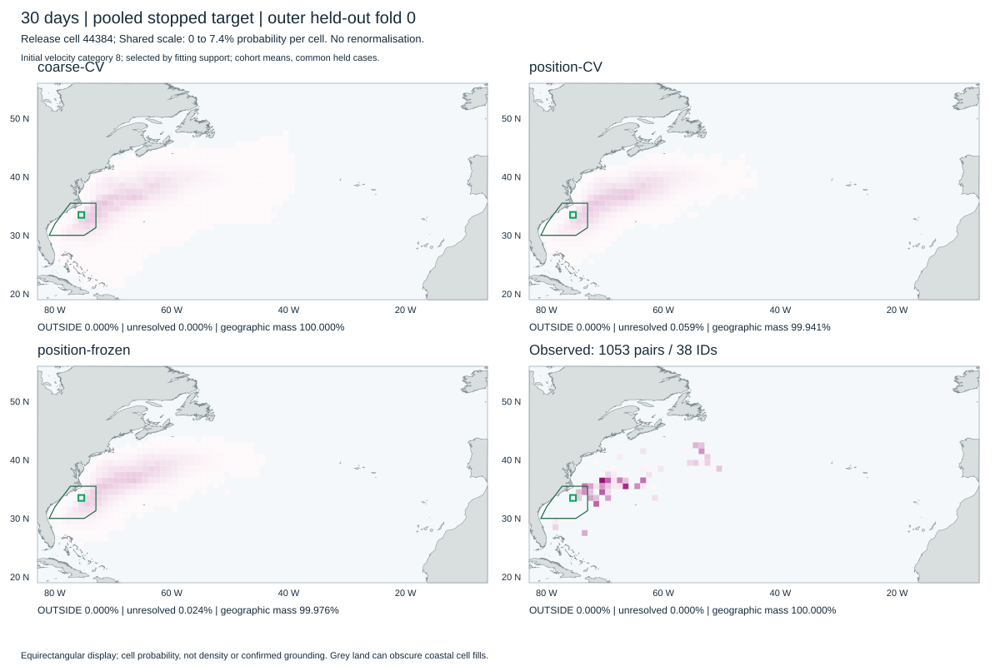

Both representations independently optimised; lower S is better. Adaptive development evidence, not final test.
| model | eligible_pairs | independent_ids | S | mean_U_pct | mean_E_pct |
|---|---|---|---|---|---|
| B2-reference | 268998 | 337 | 0.994751 | NaN | NaN |
| coarse-CV | 268998 | 337 | 0.985255 | 1.46699e-06 | 1.11126e-10 |
| coarse-at-position-settings | 268998 | 337 | 0.985344 | 1.68513e-06 | 1.12735e-10 |
| coarse-frozen | 268998 | 337 | 0.985249 | 5.19138e-07 | 4.74254e-11 |
| position-CV | 268998 | 337 | 0.985134 | 0.511159 | 0.00670312 |
| position-at-coarse-settings | 268998 | 337 | 0.985239 | 0.519982 | 0.00644463 |
| position-frozen | 268998 | 337 | 0.985219 | 0.527484 | 0.00641559 |
| comparison | delta_S | lower_95 | upper_95 | scope |
|---|---|---|---|---|
| position-CV minus coarse-CV | -0.00012128 | -0.00121284 | 0.00125367 | fixed_outer_fits_and_selection; adaptive_development; MC separate |
| position-CV minus position-frozen | -8.5095e-05 | -0.000235736 | 0.000103668 | fixed_outer_fits_and_selection; adaptive_development; MC separate |
| position-CV minus coarse-frozen | -0.000115148 | -0.00122466 | 0.00125723 | fixed_outer_fits_and_selection; adaptive_development; MC separate |
| position-CV minus coarse-at-position-settings | -0.000209689 | -0.00127705 | 0.00100037 | fixed_outer_fits_and_selection; adaptive_development; MC separate |
| position-at-coarse-settings minus coarse-CV | -1.60157e-05 | -0.00107515 | 0.0013035 | fixed_outer_fits_and_selection; adaptive_development; MC separate |
| comparison | delta_S | MC_SE |
|---|---|---|
| position-CV minus coarse-CV | -0.00012128 | 4.19185e-05 |
| position-CV minus coarse-at-position-settings | -0.000209689 | 4.19185e-05 |
| position-CV minus coarse-frozen | -0.000115148 | 4.19185e-05 |
| position-CV minus position-frozen | -8.5095e-05 | 5.88964e-05 |
| position-at-coarse-settings minus coarse-CV | -1.60157e-05 | 4.19277e-05 |
Full method, choices and limitations · Fold choices
